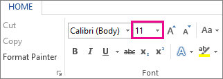

To change the font size of selected text in desktop Excel, PowerPoint, or Word:
Select the text or cells with text you want to change. To select all text in a Word document, press Ctrl + A.
On the Home tab, click the font size in the Font Size box.

You can also type in any size you want, within the following limits:
Excel: between 1 and 409, between 1 and 409, in multiples of .5 (such as 10.5 or 105.5)
PowerPoint: between 1 and 3600, in multiples of .1 (such as 10.3 or 105.7)
Word: between 1 and 1638, in multiples of .5 (such as 10.5 or 105.5)